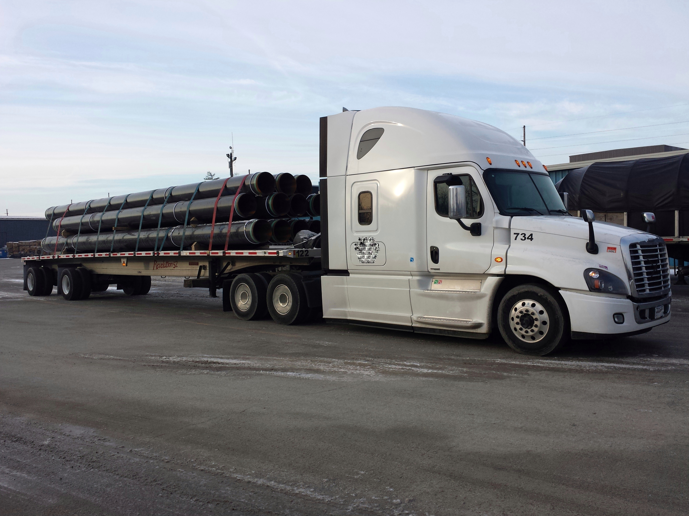
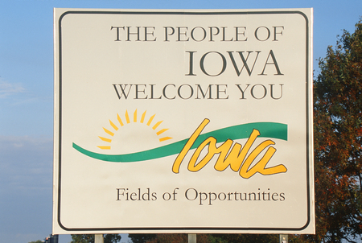
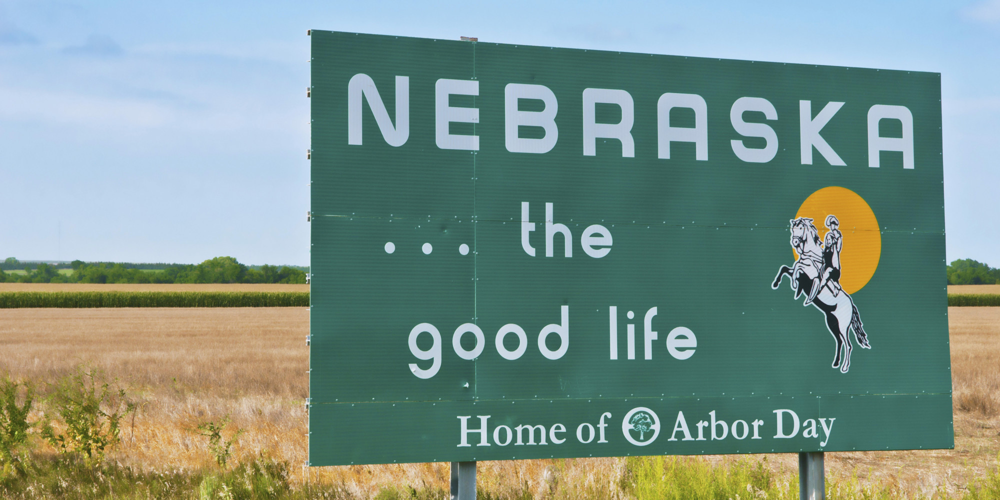
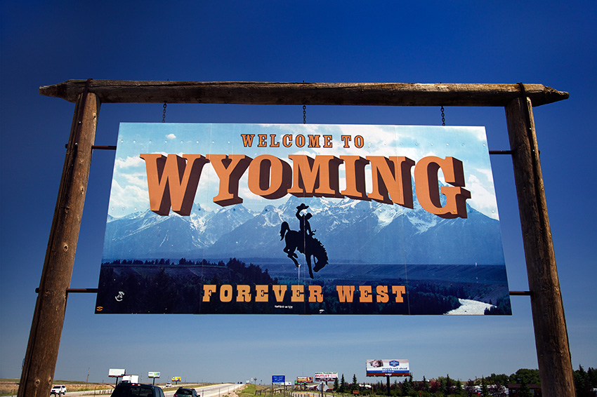
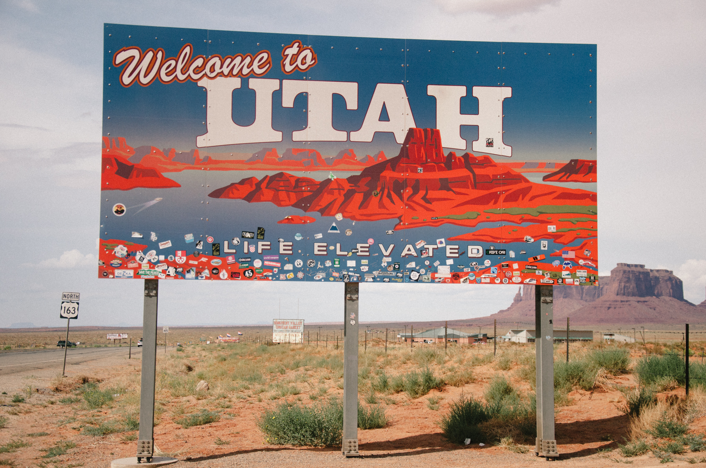
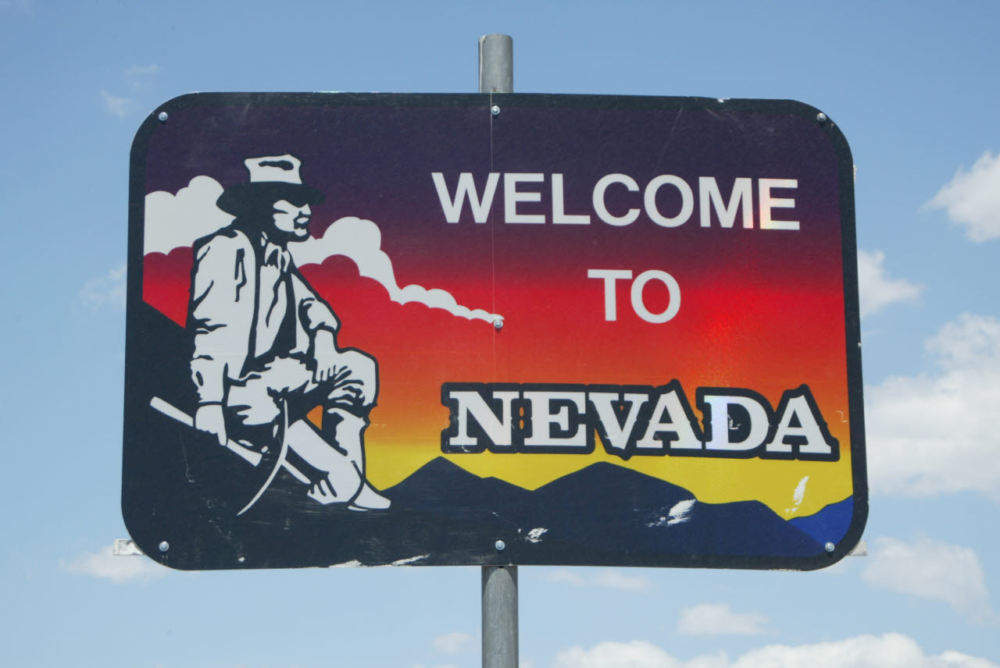
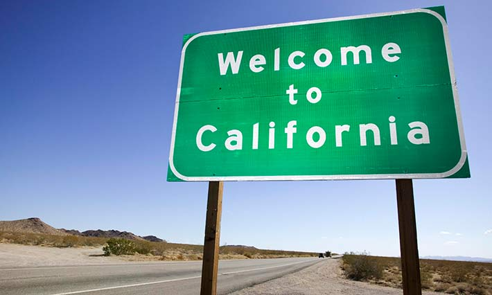

We just got loaded in Chicago, secured the load, did pre-trip inspection (PTI),
(important step, loaded truck weights up to 80,000 pounds, so safety is always priority) and now we are ready to roll.
It's late morning, so we have almost all day for driving!
After getting on I-80 and driving for 2.5 hours we are entering Iowa

Already afternoon, so we are stopping for half an hour at a truck stop for food and restroom,
also checking our load securement, then back on the road!
3.5 hours later we are entering Nebraska:

Half an hour later another stop to get fuel and food.
on average truck burns 100 gallons of diesel a day,
But no worries it takes just about 10 min to fill it up!
After truck and we filled up, time to get back on a road!
After another hour and a half of driving we are stopping in York for the night!
Time for shower and rest. Legally, a solo driver can drive only 11 hours a day in 14 hours
(3 hours are for stops, loading/unloading and other stuff).
After 14 hours a driver supposed to get at least 10 hours of "sleeper" (rest) time.
Time to wake up... get some tea/coffee, do PTI and start driving!
In 3 hours we are stopping in North Platte to get lunch...
after short break we keep driving...
In 2.5 hours we cross Wyoming border
and are glad that weather conditions are good and there are no closures or restrictions for driving

1.5 hours of driving in Wyoming and fuel stop in Laramie...
Just 4 more hours of driving for today and we'll park for the night in Evanston, WY!
Cold morning...up...coffee...PTI...driving...
here is Utah border:

3 hours straight driving and entering Nevada:

Lunch stop in West Wendover, NV...
You can play slots right on a truck stop!
After not winning a million $, back to the steering wheel...
6 driving hours later,
we stopping in Reno, NV to fuel both tanks and stomach
After that we just drive a little
to cross the CA border and to park in rest area for the night!

Just 4 to 5 more hours and we'll get to our delivery in San Francisco,
then we'll get reloaded and go back somewhere in Midwest, East, or South! :-)